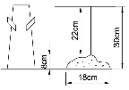

전산응용건축제도기능사 (2009-03-29 기출문제)
1과목: 건축구조
1. 강재가 항복강도 이하의 강도를 유발하는 반복하중을 장기간 받을 때, 균열이 심화되는 경우를 의미하는 용어는?
- 취성
- 피로
- 변형도
- 인성
(정답률: 71%)

2. 다음 중 라멘구조에 대한 설명으로 옳지 않은 것은?
- 기둥과 보의 절점이 강접합되어 있다.
- 기둥과 보의 휨응력이 발생한다.
- 내부 벽의 설치가 자유롭다.
- 예로는 조적조나 목구조 등이 있다.
(정답률: 62%)
3. 벽돌조 내력벽의 두께는 당해 벽높이의 최소 얼마 이상으로 하는가?
- 1/10
- 1/15
- 1/20
- 1/25
(정답률: 60%)
4. 기초 구조를 정할 때 고려할 점 중 옳지 않은 것은?
- 인접건물의 기초에 주의하고 손상을 주지 않도록 한다.
- 지내력이 좋은 지반에 설치한다.
- 기초 밑면을 동결선 밑에 놓는다.
- 한 건물의 기초형식은 여러 형식을 혼동한다.
(정답률: 86%)
5. 4변에 의해 지지되는 철근콘크리트슬래브 중 장변의 길이가 단변 길이의 몇 배를 넘으면 1방향 슬래브로 해석하는가?
- 2배
- 3배
- 4배
- 5배
(정답률: 69%)
6. 다음 중 철골조 플레이트보(plate girder)의 구성부재에 해당되지 않는 것은?
- 래티스
- 스티프너
- 플랜지 앵글
- 커버 플레이트
(정답률: 47%)
7. 왕대공 지붕틀에서 중도리를 직접 받쳐주는 것은?
- 처마도리
- ㅅ자보
- 깔도리
- 평보
(정답률: 56%)
8. 현장치가 콘크리트 중 수중에서 타설하는 콘크리트 최소 피복두께는 얼마인가?
- 60㎜
- 80㎜
- 100㎜
- 120㎜
(정답률: 64%)
9. 다음 중 건축물에 수평으로 작용하는 하중은?
- 적설하중
- 고정하중
- 적재하중
- 지진하중
(정답률: 49%)
10. 철골구조형식 중 삼각형 뼈대를 하나의 기본형으로 조립하여 축방향력만 생기도록 한 구조는 무엇인가?
- 트러스 구조
- PC 구조
- 플랫 슬래브 구조
- 조적 구조
(정답률: 86%)
11. 축방향 하중을 받는 지하실 외벽 및 기초 벽체의 두께는 최소 얼마 이상이어야 하는가?
- 100㎜
- 150㎜
- 200㎜
- 300㎜
(정답률: 49%)
12. 견고한 지반이 깊이 있을 경우 지상에서 원통형, 사각형통의 밑 없이 상자를 만들고 그 속에서 토사를 파내어 상자를 내리 앉히고 저부에 콘크리트를 부어 기초로 하는 것으로 케이슨 기초라고도 불리우는 것은?
- 주춧돌기초
- 잠함기초
- 말뚝기초
- 직접기초
(정답률: 60%)
13. 보강블록조에서 내력벽 두께는 최소 얼마 이상 이어야 하는가?
- 90㎜
- 120㎜
- 150㎜
- 200㎜
(정답률: 67%)
14. 마름돌의 거친면의 돌출부를 쇠메 등으로 쳐서 면을 보기 좋게 다듬는 것을 무엇이라 하는가?
- 메다듬
- 정다듬
- 도드락 다듬
- 잔다듬
(정답률: 47%)
15. 사각형이나 원형 띠철근으로 둘러싸인 압축부재의 축방향 주철근의 최소 개수는?
- 2개이상
- 4개이상
- 5개이상
- 6개이상
(정답률: 80%)
16. 목구조에서 가새에 대한 설명으로 옳은 것은?
- 목조 벽체를 수평력에 견디게 하고 안정한 구조로 하기 위한 것이다.
- 가새의 경사는 30°에 가까울수록 유리하다.
- 기초와 토대를 고정하는데 설치한다.
- 가새에는 인장응력만 발생한다.
(정답률: 67%)
17. 돌쌓기의 1켜의 높이는 모두 동일한 것을 쓰고 수평줄눈이 일직선으로 통하게 쌓는 돌쌓기 방식은?
- 바른층쌓기
- 허튼층쌓기
- 층지어쌓기
- 허튼쌓기
(정답률: 79%)
18. 다음 중 건물하부의 지하실 바닥전체를 1개의 일체식기초로 축조하는 기초형식은?
- 독립기초
- 복합기초
- 줄기초
- 온통기초
(정답률: 79%)
19. 미서기문의 마중대는 서로 턱솔 또는 딴혀를 대어 방풍적으로 물려지게 하는데 무엇이라 하는가?
- 지도리
- 풍소란
- 접문
- 문선
(정답률: 68%)
20. 하중전달과 지지방법에 따른 막구조의 종류에 해당하지 않는 것은?
- 골조막구조
- 현수막구조
- 공기지지구조
- 절판막구조
(정답률: 32%)
2과목: 건축재료
21. 다음 중 석재의 사용시 유의 사항으로 옳은 것은?
- 석재를 구조재로 사용시 인장재로만 사용해야 한다.
- 가공시 되도록 예각으로 한다.
- 외벽 특히 콘크리트표면 첨부용 석재는 연석을 피해야 한다.
- 중량이 큰 것은 높은 곳에 사용하도록 한다.
(정답률: 55%)
22. 고로시멘트의 특징에 대한 설명으로 옳지 않은 것은?
- 건조수축이 많으므로 시공에 유의해야 한다.
- 내열성이 크고 수밀성이 양호하다.
- 응결시간이 빠르고 초기 강도가 크다.
- 화학저항성이 높아 하수 등에 접하는 콘크리트에 적합하다.
(정답률: 43%)
23. 점토의 압축강도는 인장강도의 약 얼마 정도인가?
- 1배
- 2배
- 3배
- 5배
(정답률: 61%)
24. 다음 중 목재의 함수율과 역학적 성질에 관한 설명으로 옳은 것은? (단, 섬유포화점 이하인 경우)
- 함수율이 낮을수록 강도가 증가한다.
- 함수율이 높을수록 강도가 증가한다.
- 함수율과 관계없이 강도는 일정하다.
- 함수율이 낮을수록 인성은 증가한다.
(정답률: 64%)
25. 표준형 점토 벽돌의 크기는? (단, 단위는 ㎜)
- 190×90×57
- 200×90×60
- 210×100×57
- 210×120×60
(정답률: 83%)
26. 전기절연성, 내후성이 우수하며 발수성이 있어 방수제로 쓰이는 수지는?
- 실리콘수지
- 푸란수지
- 요소수지
- 멜라민수지
(정답률: 64%)
27. 시멘트를 구성하는 주요 화학성분으로 가장 거리가 먼 것은?
- 실리카
- 산화알루미늄
- 일산화탄소
- 석회
(정답률: 55%)
28. 블리딩(Bleeding)과 크리프(Creep)에 대한 설명으로 옳은 것은?
- 블리딩이란 굳지 않은 모르타르나 콘크리트에 있어서 윗면에 물이 스며 나오는 현상을 말한다.
- 블리딩이란 콘크리트의 수화작용에 의하여 경화하는 현상을 말한다.
- 크리프란 하중이 일시적으로 작용하면 콘크리트의 변형이 증가하는 현상을 말한다.
- 크리프란 블리딩에 의하여 콘크리트 표면에 떠올라 침전된 물질을 말한다.
(정답률: 63%)
29. 파티클 보드에 대한 설명 중 옳지 않은 것은?
- 변형이 아주 작다.
- 합판에 비해 힘강도는 떨어지나 면내 강성은 우수하다.
- 흡음성과 열의 차단성이 작다.
- 칸막이벽, 가구 등에 이용된다.
(정답률: 73%)
30. 다음 중 지하실이나 옥상의 채광용으로 가장 적당한 유리는?
- 폼 글라스(foam glass)
- 프리즘 타일(prism tile)
- 글라스 블록(glass block)
- 글라스 울(glass wool)
(정답률: 70%)
31. 계단의 미끄럼을 방지하기 위하여 놋쇠 또는 황동, 스테인리스강제 등에 홈파기, 고무 삽입 등의 처리를 한 것은?
- 와이어 메쉬
- 코너 비드
- 논슬립
- 경첩
(정답률: 74%)
32. 다음 중 건축 재료용으로 가장 많이 이용되는 철강은?
- 탄소강
- 니켈강
- 크롬강
- 순철
(정답률: 61%)
33. 점성이나 침투성은 작으나 온도에 의한 변화가 적어서 열에 대한 안정성이 크며 아스팔트 프라이머의 제작에 사용되는 것은?
- 로크아스팔트
- 스트레이트아스팔트
- 블로운아스팔트
- 아스팔트타이트
(정답률: 45%)
34. 다음 중 골재의 체가름 시험에서 사용하는 체가 아닌 것은?
- 0.15㎜
- 1.2㎜
- 5㎜
- 35㎜
(정답률: 56%)
35. 다음 석재 중 화성암계에 속하는 것은?
- 응회암
- 안산암
- 대리석
- 점판암
(정답률: 58%)
36. 다음 중 벽 및 천장재료에 요구되는 성질로 옳지 않은 것은?
- 열전도율이 큰 것이어야 한다.
- 차음이 잘되어야 한다.
- 내화?내구성이 큰 것이어야 한다.
- 시공이 용이한 것이어야 한다.
(정답률: 85%)
37. 다음 중 수화열 발생이 작은 시멘트로서 원자로의 차폐용 콘크리트 제조에 가장 적합한 시멘트는?
- 중용열포틀랜드 시멘트
- 조강포틀랜드 시멘트
- 보통포틀랜드 시멘트
- 알루미나 시멘트
(정답률: 66%)
38. AE제를 사용한 콘크리트의 특징이 아닌 것은?
- 워커빌리티가 좋아진다.
- 단위 수량이 감소된다.
- 수밀성, 내구성이 커진다.
- 강도가 증가한다.
(정답률: 46%)
39. 다음 중 회반죽에 관한 설명으로 옳지 않은 것은?
- 경화건조에 의한 수축률은 미장바름 중 가장 작은 편이다.
- 여물을 사용하여 균열을 분산, 경감시킨다.
- 건조에 시일이 오래 걸린다.
- 소석회에 모래, 해초풀 등을 혼합하여 만든다.
(정답률: 36%)
40. 그림은 콘크리트 슬럼프(Slump test)결과이다. 슬럼프 값은 얼마인가?

- 8cm
- 18cm
- 22cm
- 30cm
(정답률: 68%)
3과목: 건축계획 및 제도
41. 건축물의 계획과 설계 과정 중 계획 단계에 해당하지 않는 것은?
- 세부 결정도면 작성
- 형태 및 규모의 구상
- 대지 조건 파악
- 요구 조건 분석
(정답률: 79%)
42. 다음 중 봉수의 파괴 원인과 가장 관계가 먼 것은?
- 모세관 현상
- 증발
- 유도 사이펀 작용
- 간접배수
(정답률: 61%)
43. 건축물의 묘사에 있어서 묘사 도구로 사용하는 연필에 대한 설명 중 틀린 것은?
- 폭이 넓은 명암을 나타낸다.
- 다양한 질감 표현이 가능하다.
- 지울 수 있으나 번지거나 더러워질 수 있다.
- 일반적으로 H수가 많을수록 무르다.
(정답률: 83%)
44. 다음 중 공동주택 배치에서 인동간격의 결정 요소와 가장 거리가 먼 것은?
- 일조
- 경관
- 채광
- 통풍
(정답률: 73%)
45. 건축도면 작성시 사용되는 투상법의 원칙은?
- 제1각법
- 제2각법
- 제3각법
- 제4각법
(정답률: 84%)
46. 건물의 주요 부분을 수직 절단한 것을 상상하여 그린 것으로서 건물의 높이, 지붕 구조 등을 알 수 있는 도면은?
- 단면도
- 평면도
- 전개도
- 입면도
(정답률: 73%)
47. 연립주택의 형식 중 경사지를 이용하거나 상부층으로 갈수록 약간씩 뒤로 후퇴하는 형식은?
- 타운 하우스
- 테라스 하우스
- 중정형 주택
- 로우 하우스
(정답률: 57%)
48. 다음 중 건축법이 적용되는 건축물은?
- 고속도로 통행료 징수시설
- 문화재보호법에 따른 지정문화재
- 철도의 선로 부지에 있는 플랫폼
- 문화 및 집회시설 중 동?식물원
(정답률: 56%)
49. 아파트 단위 주거의 단면 형식 중 플랫형에 대한 설명으로 옳은 것은?
- 1개의 단위 주거가 2개층에 걸쳐 있는 경우를 말한다.
- 단위 주거가 1층만으로 되어 있는 것으로 평면 계획과 구조가 단순하다.
- 편복도형에 쓰이는 경우가 많으며, 복도는 1층에 걸러서 설치된다.
- 엘리베이터의 정지층이 매 층마다 있지 않으며, 단위 주거의 평면 계획에 따른 변화를 줄 수 있다.
(정답률: 52%)
50. 철근콘크리트 줄기초 부분의 제도에 관한 설명 중 옳지 않은 것은?
- 지반에서 기초의 길이를 고려하여 지반선을 그린다.
- 축척은 1/100로만하며, 단면선과 입면선을 구분하여 그린다.
- 중심선을 기준으로 하여 좌우에 기초벽의 두께, 콘크리트 기초판의 나비 등을 양분하여 그린다.
- 재료의 단면표시를 하고, 치수선과 치수보조선, 인출선을 가는 선으로 긋고, 부재의 명칭과 치수를 기입한다.
(정답률: 76%)
51. 부엌의 일부분에 식사실을 두는 형태로 부엌과 식사실을 유기적으로 연결하여 노동력 절감이 가능한 것은?
- D(dining)
- DK(dining kitchen)
- LD(living dining)
- LK(living kitchen)
(정답률: 85%)
52. 같은 계통의 색상이라도 색의 밝고 어두운 정도의 차가 있는데, 이처럼 색체의 밝기를 나타내는 성질과 밝음과 감각을 척도화한 것을 무엇이라 하는가?
- 조도
- 휘도
- 명도
- 채도
(정답률: 73%)
53. 도면의 표시기호로 옳지 않은 것은?
- L: 길이
- H: 높이
- W: 너비
- A: 용적
(정답률: 67%)
54. 단지계획에서 근린분구에 해당되는 주택 호수 규모는?
- 100 ~ 200호
- 400 ~ 500호
- 1000 ~ 1500호
- 1600 ~ 2000호
(정답률: 64%)
55. 난방방식의 종류 중 방렬기가 필요치 않으며, 바닥면의 이용도가 높은 것은?
- 증기 난방
- 온수 난방
- 복사 난방
- 배관 난방
(정답률: 44%)
56. 다음 중 물체의 절단한 위치를 표시하거나, 경계선으로 사용되는 선은?
- 굵은 실선
- 가는 실선
- 일점 쇄선
- 파선
(정답률: 51%)
57. 부하 전류를 개폐함과 동시에 단락 및 지락 사고 발생시 각종 계전기와의 조합으로 신속히 전로를 차단하여 기기 및 전선을 보호하는 장치는?
- 변압기
- 콘덴서
- 분전반
- 차단기
(정답률: 85%)
58. 주택의 평면계획에 관한 설명 중 옳지 않은 것은?
- 주택의 평면계획은 먼저 주택의 규모를 결정해야 하고, 다음에 각 실의 크기 등을 결정해야 한다.
- 건축공간의 계획은 전체에서 부분으로, 부분에서 전체로 반복하여 검초하면서 정리한다.
- 각 실의 상호관계는 관계가 깊은 것은 격리시키고, 상반되는 성질의 것을 인접시킨다.
- 주택 내에서 공동 공간은 거실 및 식사실을 말한다.
(정답률: 78%)
59. 피뢰설비를 설치해야 하는 건축물의 높이 기준은?
- 20m 이상
- 25m 이상
- 30m 이상
- 35m 이상
(정답률: 38%)
60. 건축물과 관련된 각종 배경의 표현 방법으로 가장 올바른 것은?
- 표면은 항상 섬세하게 하도록 한다.
- 건물을 이해할 수 있도록 배경을 다서 크게 표현한다.
- 배경을 다양하게 표현한다.
- 건물보다 앞쪽의 배경은 사실적으로, 뒤쪽의 배경은 단순하게 표현한다.
(정답률: 69%)